原文出处:本文由博客园博主唱跳rap篮球提供。
原文连接:https://www.cnblogs.com/jiazilongBlog/p/11272182.html
原文连接:https://www.cnblogs.com/jiazilongBlog/p/11272182.html
基本程序设计
- 一切代码输入，请使用英文输入法
编写一个简单的程序
- 圆公式面积： area = radius * radius * 3.1415
在Python里面不需要定义数据的类型
控制台的读取与输入
- input 输入进去的是字符串
- eval
- 在jupyter用shift + tab 键可以跳出解释文档
变量命名的规范
- 由字母、数字、下划线构成
- 不能以数字开头 *
- 标识符不能是关键词(实际上是可以强制改变的，但是对于代码规范而言是极其不适合)
- 可以是任意长度
- 驼峰式命名
变量、赋值语句和赋值表达式
- 变量: 通俗理解为可以变化的量
- x = 2 * x + 1 在数学中是一个方程，而在语言中它是一个表达式
- test = test + 1 * 变量在赋值之前必须有值
同时赋值
var1, var2,var3... = exp1,exp2,exp3...
定义常量
- 常量：表示一种定值标识符，适合于多次使用的场景。比如PI
- 注意：在其他低级语言中如果定义了常量，那么，该常量是不可以被改变的，但是在Python中一切皆对象，常量也是可以被改变的
数值数据类型和运算符
- 在Python中有两种数值类型（int 和 float）适用于加减乘除、模、幂次

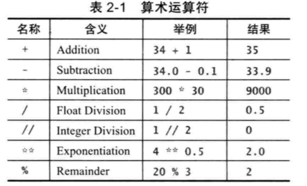
运算符 /、//、**
运算符 %
EP：
- 25/4 多少，如果要将其转变为整数该怎么改写
- 输入一个数字判断是奇数还是偶数
- 进阶: 输入一个秒数，写一个程序将其转换成分和秒：例如500秒等于8分20秒
- 进阶: 如果今天是星期六，那么10天以后是星期几？ 提示：每个星期的第0天是星期天
科学计数法
- 1.234e+2
- 1.234e-2
计算表达式和运算优先级


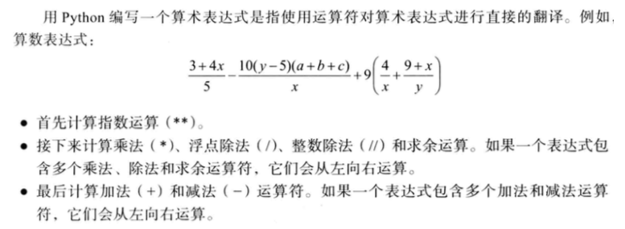
增强型赋值运算

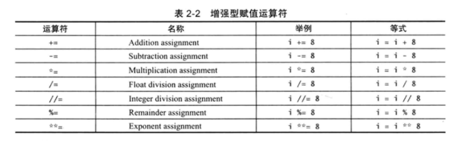
类型转换
- float -> int
- 四舍五入 round
EP:
- 如果一个年营业税为0.06%，那么对于197.55e+2的年收入，需要交税为多少？(结果保留2为小数)
- 必须使用科学计数法
Project
- 用Python写一个贷款计算器程序：输入的是月供(monthlyPayment) 输出的是总还款数(totalpayment)

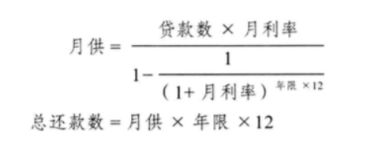
Homework
- 1

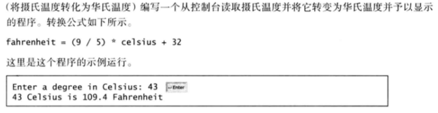
In [6]:
c = float(input('输入摄氏度'))f = (9 / 5) * c + 32print ('%.1f摄氏度 = %.1f华氏度' % (c, f))- 2

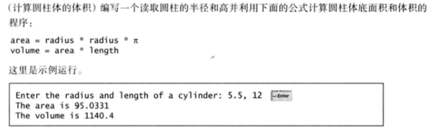
In [30]:
import mathr,l = map(float,input().split(' '))#l = float(input())area = r * r * math.pivolume = area * lprint ('The area is %.4f' % (area))print ('The volume is %.1f' % (volume))- 3

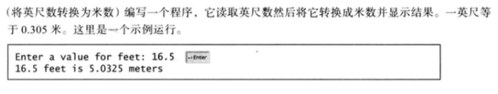
In [32]:
yingchi = float(input())mi = 0.305 * yingchiprint ('%.1f yingchi is %.4f mi' %(yingchi,mi))- 4

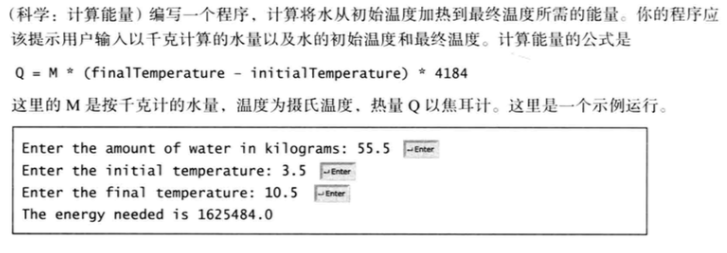
In [34]:
shuiliang = float(input())chushiwendu = float(input())zuizhongwendu = float(input())q = shuiliang * (zuizhongwendu - chushiwendu) * 4184print ('能量是 %.1f'%(q))- 5

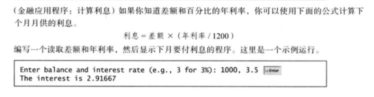
In [37]:
chae,nianlilv = map(float,input().split(','))#nianlilv = float(input())lixi = chae * (nianlilv / 1200)print ( 'The inrerest is %.5f'%(lixi))- 6

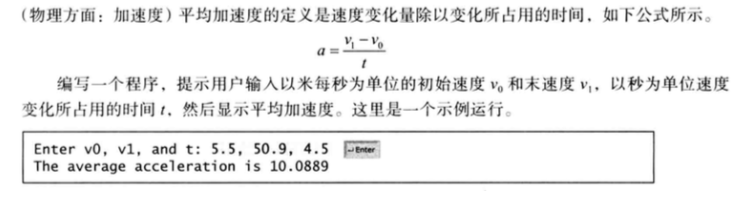
In [38]:
cssd,msd,t = map(float,input().split(','))a = (msd-cssd) / tprint('加速度是 %.4f'%(a))- 7 进阶

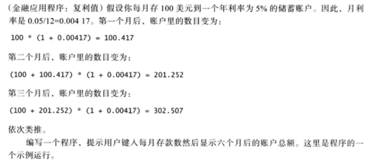
In [50]:
s = float(input())a = s * (1 + 0.00417) b = (s + a) * (1 + 0.00417) c = (s + b) * (1 + 0.00417) d = (s + c) * (1 + 0.00417)e = (s + d) * (1 + 0.00417) f = (s + e) * (1 + 0.00417)print('账户总额 %.2f' %f)- 8 进阶

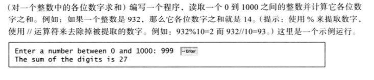
In [53]:
a = int(input())b = a % 10c = a // 100d = ( a // 10 ) - ( a // 100)*10d = b + c + dprint('和为%d'%(d))In [ ]: